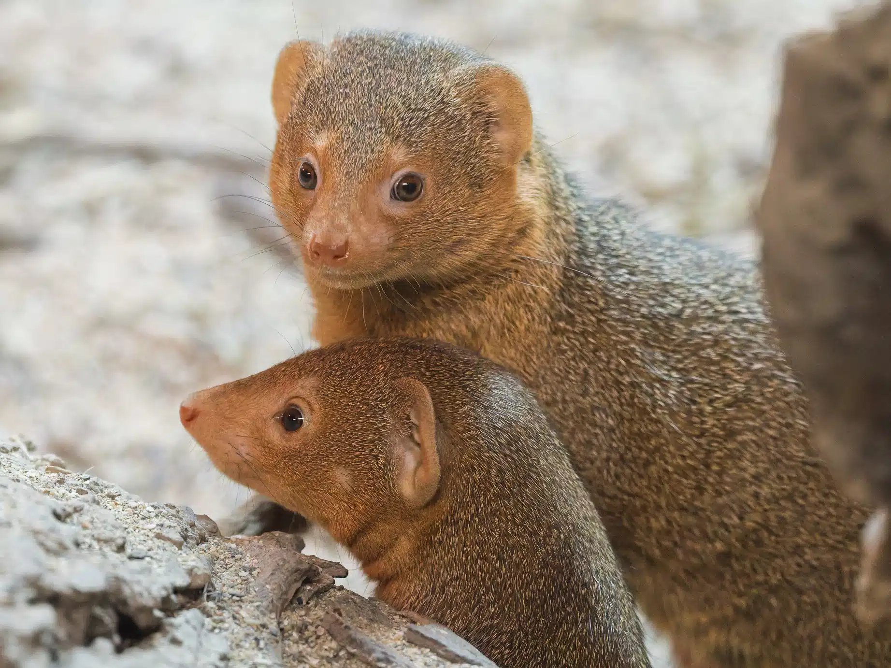

Před rokem 1921 byl lov a odchyt příčinou poklesu populace. V roce 1921 Japonsko prohlásilo králíka amamského za přírodní památku. To znemožnilo jeho lov. V roce 1963 byla úroveň ochrany zpřísněna na speciální přírodní památku. Tím byl zakázán i jeho odchyt.
Pro tyto králíky je nejnebezpečnější ničení životního prostředí jako mýcení lesů nebo komerční těžba dřeva. Přesto však byly povoleny projekty na výstavbu golfových hřišť a letovisek, při nichž dojde k odstranění lesů obývaných těmito králíky, protože ochrana speciální přírodní památky zakazuje usmrcení králíka, ale nikoli změnu jeho přirozeného prostředí. Králík amamský také čelí velkým hrozbám ze strany predátorů, kteří jsou hlavní příčinou poklesu populace. Na ostrově Amami byla vypuštěna promyka (Herpestes), aby omezila populaci jedovatých hadů, jejichž počty se dramaticky zvýšily.
